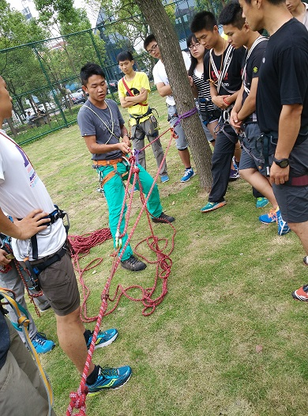

[转寄/推荐][转贴][删除][修改][设置可RE属性][上一篇][返回讨论区][下一篇][回文章][同主题列表][同主题阅读][从这里展开]
发信人: hemind(hooft), 信区: outdoor 标 题: 再会半脊--半脊峰登山行记(1) 发信站: 饮水思源 (2015年08月05日03:10:25 星期三) 在加入野协第五个年头的夏天,我把自己交给了半脊. 我的两次登山,都是半脊,这也是协会在这五年中仅有的两次雪山攀登.两次半脊对协会来说 都有不同寻常的意义,如果说去年的半脊是一次尝试,而今年的半脊则实现了一次小的突破 ,是一个新的起点. 对于我自己,两次登山都是以队长的身份参与其中,体会却大不相同.这一次我也花了不少的 时间在登山上,所以希望能记录些点滴,把整个过程展现出来. 准备阶段,换山风波 2015年3月29日,第一次登山队会议,一起讨论选山,分配职务.不过当时并没有选到一座合适 的山峰,难度合适的山峰进山困难.而对于经验相对缺乏的我们来说,这些不确定因素越少越 好.后来在8264山峰资料库翻了个遍,阅读了不少各高校登山队的登山报告.4月12日,在第二 次会议上我们确定了目标山峰,透明梦柯. 接下来就是各项准备工作,除了有些拖延之外都还算顺利.然而由于与团委的沟通较晚,拿不 出甘肃登协要求的学校同意登山的批复成了此行的阻碍.再考虑到高昂的注册费用,我们不 得不放弃透明梦柯. 队员们在学习裂缝救援技术  screen.width - 200){this.width = screen.width - 200}"> |
[转寄/推荐][转贴][删除][修改][设置可RE属性][上一篇][返回讨论区][下一篇][回文章][同主题列表][同主题阅读][从这里展开]